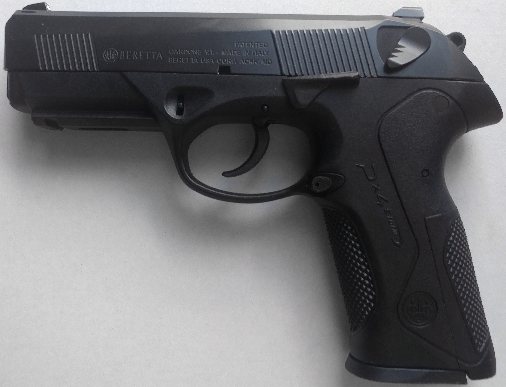
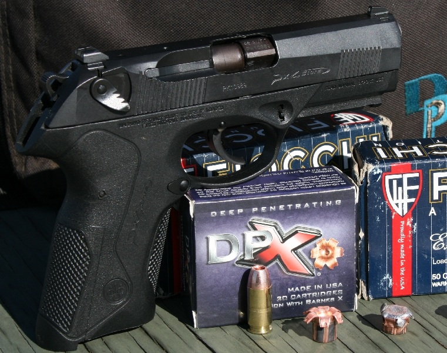
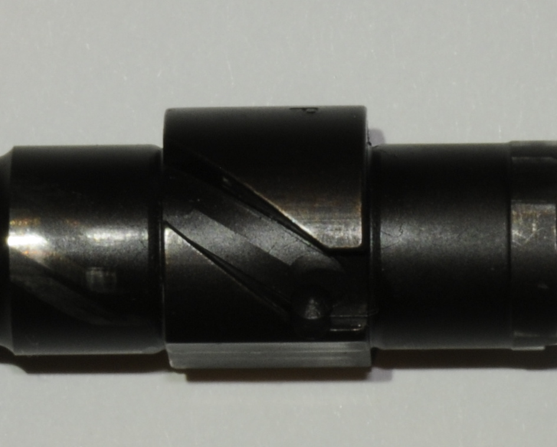

După fiecare folosire (tragere) sau cel puțin odată pe lună, se recomandă ca pistolul să fie curățat și uns. Pentru întreținere se demontează pistolul conform indicațiilor din capitolul Demontare.
Pistol semi-automat cu sistem de închidere geometric și țeavă cu translatare rotativă

Pistolul Beretta PX4 Storm are un sistem de închidere geometric cu țeavă cu translatare rotativă în timp ce corpul pistolului este conceput din tehnopolimer consolidat din fibră de sticlă.
Modularitatea, ergonomia și interschimbabilitatea părților fac din Beretta PX4 Storm să fie cele mai potrivite pistoale pentru apărarea personală și printre armele ideale ale forțelor de ordine.
Pistolul Beretta PX4 Storm model F a fost dotat cu siguranță ambidextră poziționată pe manșonul închizător care întrerupe legătura trăgaciului cu grupul de tragere și permite coborârea cocoșului în condiții de maximă siguranță, datorită rotației părții din spate a percutorului.
Siguranța poate fi armată cu cocoșul dezarmat și dacă închizătorul este deschis.
Pistoalele Beretta PX4 Storm au un dispozitiv de blocare care împiedică orice mișcare a percutorului dacă trăgaciul nu este tras complet.
Pârghia de oprire a închizătorului (slide stop) ține deschis închizătorul în poziție din spate după ce ultimul cartuș a fost tras. Acest lucru permite utilizatorului să constate imediat că pistolul nu are cartuș în camera cartușului sau în încărcător.
Poziția intermediară a cocoșului garantează oprirea pe maneta de tragere, înainte de a lovi percutorul, în cazul în care este eliberat accidental din poziția de tragere în urma unei lovituri violente sau dacă pistolul cade.


Pistolul Beretta PX4 Storm este o armă semi-automată care se caracterizează printr-o închidere geometrică cu țeavă cu translatare rotativă.
În momentul tragerii, presiunea produsă de gazele de ardere determină plecarea glonțului și, în același timp, deplasarea înspre spate a ansamblului închizător-țeavă. După o scurtă cursă înapoi, țeava este obligată de cama sa, în reacțiune cu dintele din blocul central să se rotească parțial în jurul său (aproximativ 30 de grade) până când aripioarele se desprind din umerii de închidere ai manșonului-închizător. În timp ce țeava se oprește în blocul central, manșonul închizător își continuă cursa înapoi, extrăgând, prin intermediul extractorului, tubul, producând expulzarea acestuia prin fereastră, prin acțiunea ejectorului fix, armând cocoșul și comprimând arcul de recuperare.
După terminarea cursei înapoi, manșonul închizător, împins înainte de arcul de recuperare care se destinde, avansând scoate un nou cartuș din încărcător, îl introduce în camera cartușului și forțează țeava să avanseze și să se rotească parțial în jurul său.
Atenție!: Se recomandă să se efectueze operațiunile de demontare și reasamblare lucrând deasupra unei suprafețe de sprijin în cazul căderii pieselor.
Se apasă butonul de eliberare a încărcătorului și se extrage încărcătorul;
Se trage de manșonul închizător în direcția părții din spate a pistolului, simultan cu ridicarea pârghiei de blocare a manșonului (slide stop) blocându-se acesta iar apoi se verifică vizual și tactic camera cartușului și mânerul pistol după care se deblochează manșonul închizător;
Cu degetul mare și arătătorul mâinii care nu ține arma se apasă simultan cele două capete ale șurubului de montaj în jos;
Se împinge ușor înainte manșonul închizător cu degetul mare de la mâna care ține arma, apăsând pe partea din spate a manșonului închizător;
Se trage înainte grupul închizător, țeavă-bloc central, arcul de recuperare cu ghidajul respectiv;
Ținând manșonul închizător cu dispozitivele de ochire orientate în jos, se scoate blocul central, arcul de recuperare și ghidajul țevii;
Se scoate ansamblul arc de recuperare-ghidaj arc din blocul central;
Ținând manșonul închizătorului cu dispozitivele de ochire orientate în sus și ușor înclinate (cătarea cea mai înaltă), scoateți țeava dinspre partea inferioară, ajutând trecerea prin rotație (în sens contrar acelor de ceasornic cu gura țevii orientată către înainte).
După fiecare folosire (tragere) sau cel puțin odată pe lună, se recomandă ca pistolul să fie curățat și uns. Pentru întreținere se demontează pistolul conform indicațiilor din capitolul Demontare.
Pentru curățarea țevii se pulverizează curățătorul din dotare cu ulei pentru arme, se introduce în țeavă dinspre camera cartușului și se glisează înainte și înapoi de câteva ori. Dacă este necesar se curăță mai întâi interiorul țevii folosind un solvent special pentru arme.
Curățenia țevii efectuată introducând curățătorul prin camera cartușului va evita riscul de a deteriora partea externă din jurul gurii țevii și partea internă a țevii.
Dacă este necesar, pentru curățarea componentelor pistolului se va folosi curățătorul din dotare.
Se vor șterge componentele cu o cârpă uscată până aceasta va rămâne curată. După curățare componentele metalice ale pistolului vor fi unse ușor cu ulei de armă.
AVERTISMENT: Nu se aplică niciodată prea mult ulei. Acumularea de ulei atrage murdăria care poate împiedica funcționarea și reduce fiabilitatea armei.
Testează-ți cunoștințele despre pistolul Beretta PX4 Storm cu un quiz de 18 întrebări.
Incepe testul →